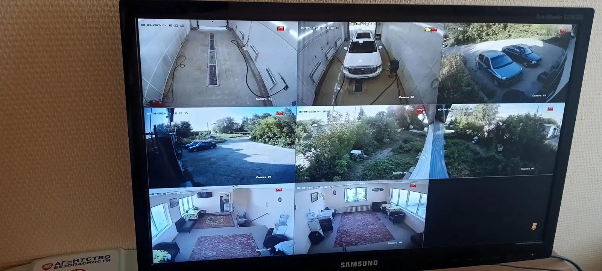

Задача клиента
С чем к нам пришли
Видеонаблюдение на автосервисе устарело и нуждалось в обновлении. Важно было провести работы оперативно и без лишних затрат на прокладку кабеля.
Поменяли шесть аналоговых камер и настроили новый регистратор. Теперь все важные зоны на прилегающей территории под контролем.

С чем к нам пришли
Видеонаблюдение на автосервисе устарело и нуждалось в обновлении. Важно было провести работы оперативно и без лишних затрат на прокладку кабеля.
Снимки после сдачи работ. Нажмите на фото, чтобы посмотреть крупно.
Полный перечень — что сделали монтажники.
Да, ставим камеры в защищённом корпусе: они работают в пыли, в мороз и в жару.
Да: ИК-подсветка для ночной записи и доступ с телефона — видно, что происходит, когда на объекте никого нет.
Зависит от объекта. Точный срок пишем в смете и в договоре; монтаж идёт так, чтобы не мешать работе.
3 года на оборудование и 1 год на монтажные работы. Если в гарантийный срок что-то перестало работать — приезжаем и чиним бесплатно.
Оставьте телефон — подберём систему под вашу задачу и пришлём смету в 3 вариантах за 15 минут.